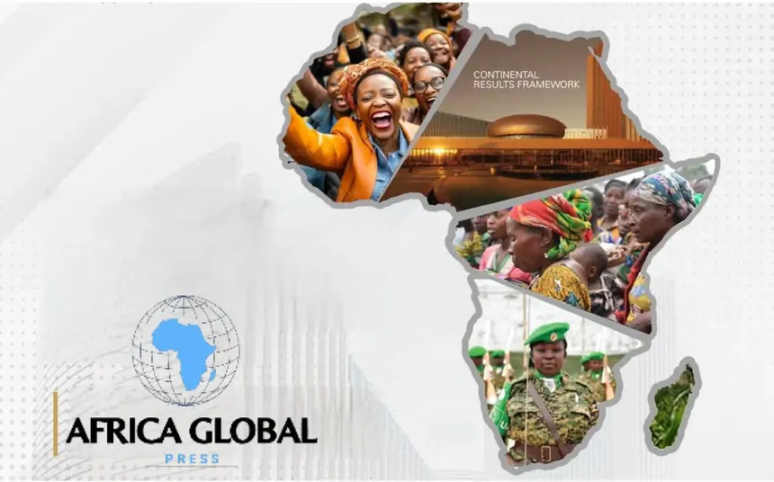
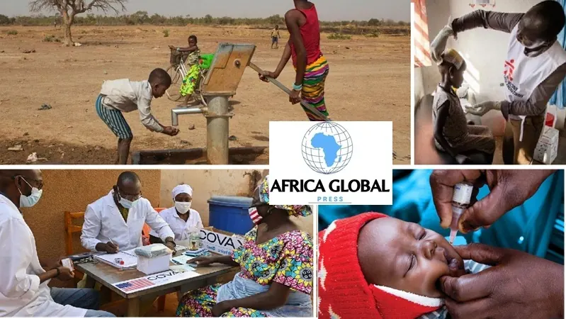
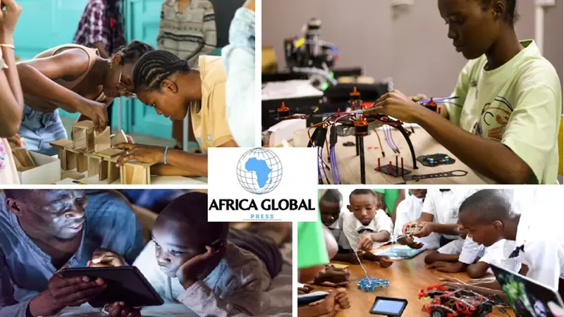
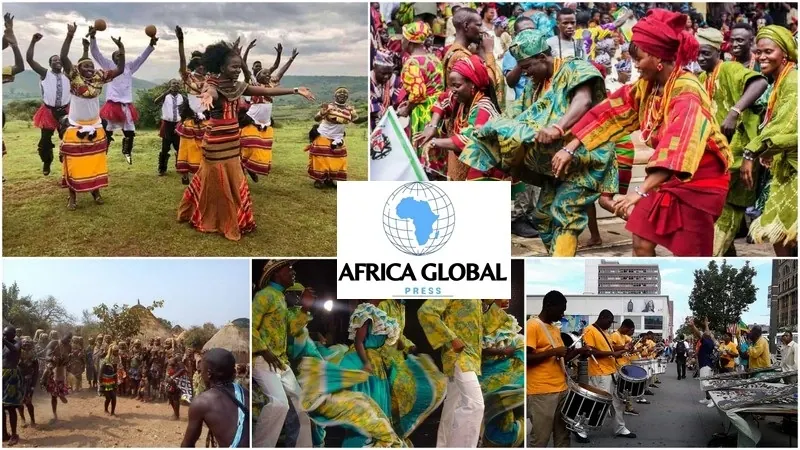
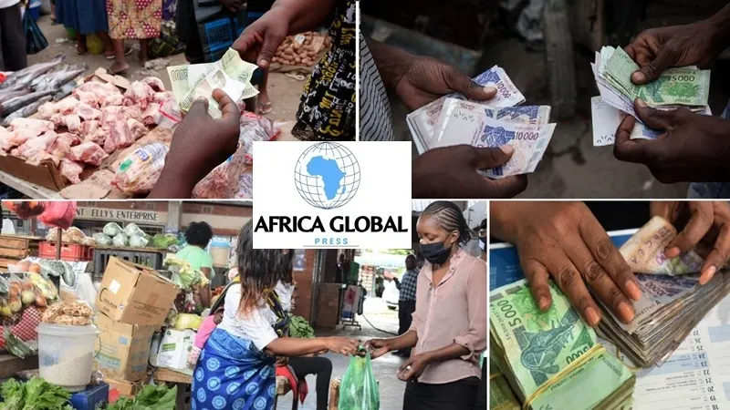

Burundi: Between Growth and Improving Social Conditions
Burundi is making notable progress on its economy, public finances and road infrastructure, backed by international partners, though administrative delays and capacity gaps persist.
Follow live news dedicated to the African continent
The latest reports, news and information (economy, politics, science, culture and leisure topics)
Read the newspaperBreaking News

As Akinwumi Adesina's term as President of the African Development Bank (ADF) draws to a close, it's time to take stock. And what a record it is! Elected in 2015…
By Koffi Didi HOUNNOU
READ MORE : ADF: Akinwumi Adesina's governance should set an example
In Guinea, efforts to consolidate peace and promote dialogue are taking on new forms. At the initiative of journalists and the “Arbre à Palabre” association, Dr…
By Koffi Didi HOUNNOU
READ MORE : Peace in Guinea: great mobilization around Dr. Sékou Kouréissy Condé
Granted a second term at the head of Fagace for having revealed it better than ever before during its existence, Dr. Nguéto Tiraïna Yambaye, the current director…
By Comlan Anicet TIDJO
READ MORE : Fagace: CEO Yambaye insists he is not a careeristBurundi is making notable progress on its economy, public finances and road infrastructure, backed by international partners, though administrative delays and capacity gaps persist.
Once flourishing in Egypt, freemasonry has been banned since 1964 and survives only as discreet, informal…
Only about a third of young West Africans now marry before 30, against nearly seven in ten in 2000, as…
From international hits and streaming records to prestigious nominations, African artists, athletes and…
In 2025, Equatorial Guinea is struggling with tax evasion, rooted in a hydrocarbon-dependent economy and opaque financial governance, as it seeks to diversify and become more transparent.
Known for idyllic beaches and political stability, the Seychelles has long been a haven for shell companies and offshore capital. Reforms are under way, but suspicions persist.
In 2025 Ghana's cedi staged one of the strongest rebounds in its modern history, gaining more than 32% against the US dollar in eleven months as the economy recovered.
A diplomatic crisis simmering since the July 2023 coup has escalated into tit-for-tat expulsions, hitting trade through Cotonou, border communities and regional security cooperation.
Agriculture accounts for about 23% of Mozambique's GDP and employs nearly 70% of the workforce, yet climate shocks, weak infrastructure and scarce credit hold it back.
With over 60% of Lesotho's people under 30, young workers are key to diversifying the economy, but unemployment, precarious jobs and skills gaps hold them back.
Guinea has become a pillar of China's supply of strategic raw materials, especially bauxite, bringing opportunities as well as risks of dependence and limited value added.
Togo's change of political regime has widened budget imbalances, slowed public investment and shaken partner confidence, deepening the country's financial difficulties.
With Uganda's general elections set for 15 January 2026, arrests of opposition activists, press restrictions…
Côte d'Ivoire's 2026 budget, set at CFA 17,350.2 billion, is up 13% on 2025 and aims to consolidate growth…
In 2025 Ghana's cedi staged one of the strongest rebounds in its modern history, gaining more than 32%…
A diplomatic crisis simmering since the July 2023 coup has escalated into tit-for-tat expulsions, hitting…
All of Africa, All the News.
From politics to culture, economics to sports, African voices, local perspectives, authentic information. Dive into the heart of African news with the latest news, key events, and exclusive analysis on Africa Global Press. Stay informed 24/7.





Log in now to access Africa Global Press.
Follow us
© 2026 Africa Global Press – All rights reserved.
Search Africa Global Press
Subscribe to our newsletter to receive the latest news straight to your inbox.
Log in now to access Africa Global Press.